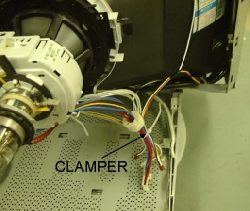
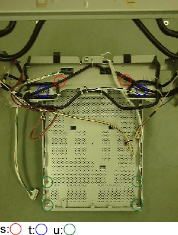

ASSY TILT and BASE Removal
- Take steps (FRONT PANEL Removal, ASSY PCB MAIN Removal).
- Cut a clamper.
- Remove 2 screws (s) and 2 screws (t) to remove the FRAME
covering the CRT with coils.
- Remove 4 screws (u) to remove the BASE from the ASSY TILT.
|
 |
Each corner is same
 |

|